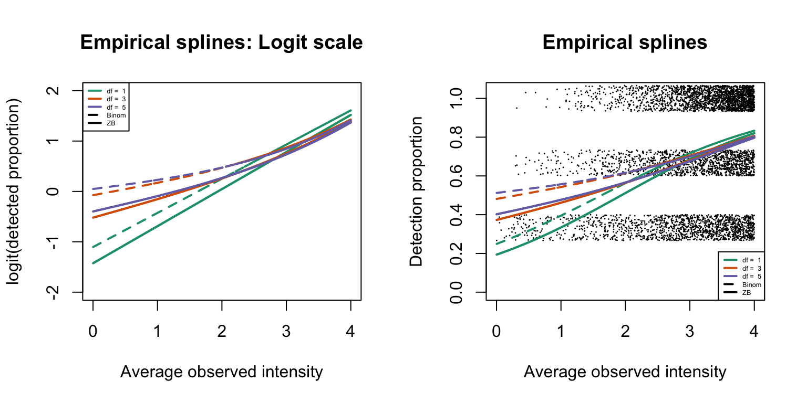
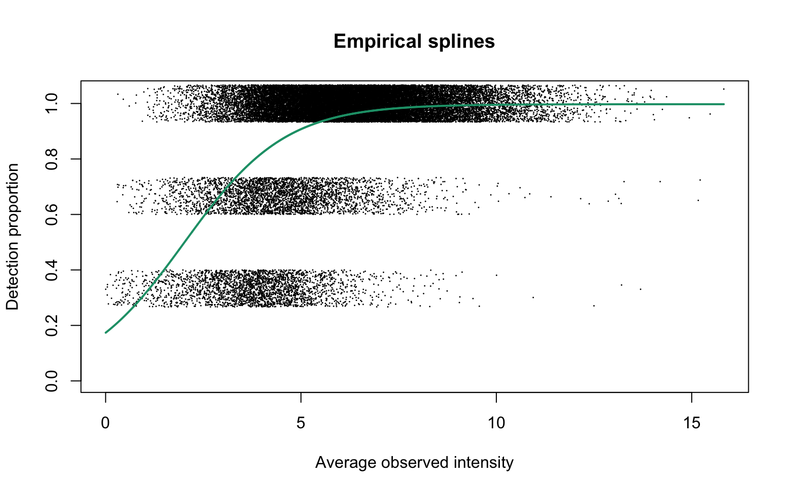

Main results and figures
Mengbo Li
Bioinformatics Division, WEHIprotDP.RmdOverview
In this file, we demonstrate the relationship between missingness and intensity using a few public datasets on both precursor and protein levels.
Dataset A: A DIA-NN subset of three
Data summary
data("diannSubset")
dim(diannSubset)
[1] 34689 3
diannSubset[1:5, ]
1A 2A 3A
AAAAAAAAAPAAAATAPTTAATTAATAAQ3 8.16 8.23 8.29
AAAAAAALQAK2 9.85 9.79 9.84
AAAAEIAVK2 NA 3.52 NA
AAAALAGGKK2 1.03 2.61 2.90
AAADALSDLEIK2 10.14 10.15 10.19The overall proportion of missing data
sum(is.na(diannSubset)) / length(diannSubset)
[1] 0.0863Empirical logistic splines for detected proportions
nuis <- getNuisance(diannSubset)Consider natural cubic splines generated with 1, 3 and 5 degrees of freedom:
dfList <- seq(1, 5, 2)
lineColours <- RColorBrewer::brewer.pal(4, "Dark2")
allFits <- list()
for (df in dfList) {
params0 <- logitSplines_start(dp = nuis$dp, mu = nuis$mu_obs, wt = nuis$wt, df = df)
fit <- logit_ztbinom(dp = nuis$dp, X = params0$X, wt = nuis$wt, beta0 = params0$betas_start)
allFits[[(df+1)/2]] <- fit
if (df == 1)
plotEmpSplines(nuis, X = params0$X, fit$params, ylim = c(0, 1.04),
lineCol = lineColours[(df+1)/2], capped = FALSE)
if (df > 1)
plotEmpSplines(nuis, X = params0$X, fit$params,
plot.dotts = FALSE, ylim = c(0, 1.04),
lineCol = lineColours[(df+1)/2], capped = FALSE)
}
legend("bottomright", legend = paste("df = ", dfList), col = lineColours, lwd = 2, lty = 1)
Reduced deviance compared to an intercept model
Fit a baseline model, that is, the logistic regression fit where the detection probability is constant in all precursors.
params0 <- logitSplines_start(dp = nuis$dp, mu = nuis$mu_obs, wt = nuis$wt, df = 0)
baselineFit <- logit_ztbinom(dp = nuis$dp, X = params0$X, wt = nuis$wt, beta0 = params0$betas_start)
baselineDev <- 2*min(baselineFit$info[, "neg.LL"])
devs <- data.frame(df = c(0, dfList),
dev = c(baselineDev, sapply(allFits, function(i) 2*min(i$info[, "neg.LL"])))) %>%
mutate(dev.decre = baselineDev - dev,
percDevReduced = dev.decre / max(dev.decre))
ggplot(slice(devs, 2:4), aes(x = df, y = percDevReduced)) +
geom_point() +
geom_line() +
geom_text(aes(label = signif(percDevReduced, 4)), vjust = -0.8) +
scale_x_continuous(breaks = c(1, 3, 5)) +
labs(x = "DF", y = "Deviance% reduced") +
theme_classic()
Empirical logit-linear curve with capped probabilities
params0 <- logitSplines_start(dp = nuis$dp, mu = nuis$mu_obs, wt = nuis$wt, df = 1)
cappedLinear <- cappedLogit_ztbinom(dp = nuis$dp, X = params0$X, wt = nuis$wt,
alpha0 = 0.9, beta0 = params0$betas_start, trace = FALSE)
cappedLinear$params
alpha b0 b1
0.997 -1.556 15.263
plotEmpSplines(nuis, X = params0$X, cappedLinear$params, lineCol = lineColours[1])

Dataset B: diaPASEF
Data downloaded from https://www.embopress.org/doi/full/10.15252/msb.202110798. The data are obtained by the diaPASEF pipeline and searched by DIA-NN. Sample size is 15; and the overall amount of missingness is moderate. Project accession: PXD024043 (www.ebi.ac.uk/pride/archive?keyword=PXD024043). (DIANN1.8_diaPASEF_1ng_repetitions.zip)
Data summary
data("diapasef")
dim(diapasef)
[1] 25387 15
diapasef[1:5, 1:5]
S1-D1_1_2944 S1-D2_1_2945 S1-D3_1_2946 S1-D4_1_2947
(UniMod:1)AAAAAAAAAAGAAGGR2 12.5 12.5 12.35 11.49
(UniMod:1)AAAAAAGAASGLPGPVAQGLK2 12.7 12.4 12.86 12.56
(UniMod:1)AAAAAAGAGPEM(UniMod:35)VR2 12.0 12.0 11.41 11.60
(UniMod:1)AAAAAATAAAAASIR2 11.1 10.5 10.70 11.58
(UniMod:1)AAAAAEQQQFYLLLGNLLSPDNVVR3 NA 10.6 9.53 9.69
S1-D5_1_2948
(UniMod:1)AAAAAAAAAAGAAGGR2 11.72
(UniMod:1)AAAAAAGAASGLPGPVAQGLK2 11.33
(UniMod:1)AAAAAAGAGPEM(UniMod:35)VR2 12.40
(UniMod:1)AAAAAATAAAAASIR2 NA
(UniMod:1)AAAAAEQQQFYLLLGNLLSPDNVVR3 8.02The overall proportion of missing data
sum(is.na(diapasef)) / length(diapasef)
[1] 0.223Empirical logistic splines for detected proportions
diapasefRes <- gatherResults(diapasef)
for (i in 1:length(dfList)) {
if (i == 1)
plotEmpSplines(diapasefRes$nuis, X = diapasefRes$splineFits_params0[[i]]$X,
diapasefRes$splineFits[[i]]$params, point.cex = 0.1,
lineCol = lineColours[i], jitter.amount = 1/ncol(diapasef)/2,
capped = FALSE)
if (i > 1)
plotEmpSplines(diapasefRes$nuis, X = diapasefRes$splineFits_params0[[i]]$X,
diapasefRes$splineFits[[i]]$params,
plot.dotts = FALSE,
lineCol = lineColours[i], capped = FALSE)
}
legend("bottomright", legend = paste("df = ", dfList), col = lineColours, lwd = 2, lty = 1)
Empirical logit-linear curve with capped probabilities
diapasefRes$cappedLinearFit$params
alpha b0 b1
1.00 -1.85 11.65
plotEmpSplines(diapasefRes$nuis, X = diapasefRes$splineFits_params0[[1]]$X,
diapasefRes$cappedLinearFit$params, lineCol = lineColours[1],
jitter.amount = 1/ncol(diapasef)/2,
point.cex = 0.1)

Dataset C: A MaxDIA dataset
Data summary
data("maxdia")
dim(maxdia)
[1] 62515 27
maxdia[1:5, 1:5]
Intensity 1 Intensity 10 Intensity 11 Intensity 12 Intensity 13
0 NA NA NA 24.2 24.5
1 NA 22.2 27.9 NA NA
2 31.9 32.1 32.2 32.2 32.1
4 NA NA 28.1 27.2 NA
5 27.7 NA NA NA NAThe overall proportion of missing data
sum(is.na(maxdia)) / length(maxdia)
[1] 0.328Empirical logistic splines for detected proportions
maxdiaRes <- gatherResults(maxdia)
for (i in 1:length(dfList)) {
if (i == 1)
plotEmpSplines(maxdiaRes$nuis, X = maxdiaRes$splineFits_params0[[i]]$X,
maxdiaRes$splineFits[[i]]$params, point.cex = 0.1,
lineCol = lineColours[i], jitter.amount = 1/ncol(maxdia)/2,
capped = FALSE)
if (i > 1)
plotEmpSplines(maxdiaRes$nuis, X = maxdiaRes$splineFits_params0[[i]]$X,
maxdiaRes$splineFits[[i]]$params,
plot.dotts = FALSE,
lineCol = lineColours[i], capped = FALSE)
}
legend("bottomright", legend = paste("df = ", dfList), col = lineColours, lwd = 2, lty = 1)

Empirical logit-linear curve with capped probabilities
maxdiaRes$cappedLinearFit$params
alpha b0 b1
0.971 -2.493 10.751
plotEmpSplines(maxdiaRes$nuis, X = maxdiaRes$splineFits_params0[[1]]$X,
maxdiaRes$cappedLinearFit$params, lineCol = lineColours[1],
jitter.amount = 1/ncol(maxdia)/2,
point.cex = 0.1)
Dataset D: DDA plasma data
The paper is available at https://www.mcponline.org/article/S1535-9476(20)34998-7/fulltext#seccestitle170 by the MaxQuant group. Use the peptides.txt output from MaxQuant. This is a blood plasma sample so heaps of missing values. The dataset identifier is PXD014777.
Data summary
data("ddaPlasma")
dim(ddaPlasma)
[1] 2384 212
ddaPlasma[1:5, 1:5]
S1-A1_1_2513 S1-A10_1_2522 S1-A11_1_2524 S1-A12_1_2525 S1-B1_1_2526
0 22.8 22.8 23.3 23 21.7
1 NA NA NA NA NA
2 NA NA NA NA NA
3 NA NA NA NA NA
4 NA NA NA NA NAThe overall proportion of missing data
sum(is.na(ddaPlasma)) / length(ddaPlasma)
[1] 0.569Empirical logistic splines for detected proportions
ddaPlasmaRes <- gatherResults(ddaPlasma)
for (i in 1:length(dfList)) {
if (i == 1)
plotEmpSplines(ddaPlasmaRes$nuis, X = ddaPlasmaRes$splineFits_params0[[i]]$X,
ddaPlasmaRes$splineFits[[i]]$params,
lineCol = lineColours[i], add.jitter = FALSE,
capped = FALSE)
if (i > 1)
plotEmpSplines(ddaPlasmaRes$nuis, X = ddaPlasmaRes$splineFits_params0[[i]]$X,
ddaPlasmaRes$splineFits[[i]]$params,
plot.dotts = FALSE,
lineCol = lineColours[i], capped = FALSE)
}
legend("bottomright", legend = paste("df = ", dfList), col = lineColours, lwd = 2, lty = 1)


References
Demichev, V., Messner, C.B., Vernardis, S.I., Lilley, K.S. and Ralser, M., 2020. DIA-NN: neural networks and interference correction enable deep proteome coverage in high throughput. Nature methods, 17(1), pp.41-44.
Brunner, A.D., Thielert, M., Vasilopoulou, C., Ammar, C., Coscia, F., Mund, A., Hoerning, O.B., Bache, N., Apalategui, A., Lubeck, M. and Richter, S., 2022. Ultra‐high sensitivity mass spectrometry quantifies single‐cell proteome changes upon perturbation. Molecular systems biology, 18(3), p.e10798.
Sinitcyn, P., Hamzeiy, H., Salinas Soto, F., Itzhak, D., McCarthy, F., Wichmann, C., Steger, M., Ohmayer, U., Distler, U., Kaspar-Schoenefeld, S. and Prianichnikov, N., 2021. MaxDIA enables library-based and library-free data-independent acquisition proteomics. Nature biotechnology, 39(12), pp.1563-1573.
Prianichnikov, N., Koch, H., Koch, S., Lubeck, M., Heilig, R., Brehmer, S., Fischer, R. and Cox, J., 2020. MaxQuant software for ion mobility enhanced shotgun proteomics. Molecular & Cellular Proteomics, 19(6), pp.1058-1069.
Session information
sessionInfo()
R version 4.2.0 (2022-04-22)
Platform: x86_64-apple-darwin17.0 (64-bit)
Running under: macOS Big Sur/Monterey 10.16
Matrix products: default
BLAS: /Library/Frameworks/R.framework/Versions/4.2/Resources/lib/libRblas.0.dylib
LAPACK: /Library/Frameworks/R.framework/Versions/4.2/Resources/lib/libRlapack.dylib
locale:
[1] en_AU.UTF-8/en_AU.UTF-8/en_AU.UTF-8/C/en_AU.UTF-8/en_AU.UTF-8
attached base packages:
[1] stats graphics grDevices utils datasets methods base
other attached packages:
[1] limma_3.52.1 protDP_0.1.0 forcats_0.5.1 stringr_1.4.0 dplyr_1.0.9
[6] purrr_0.3.4 readr_2.1.2 tidyr_1.2.0 tibble_3.1.7 ggplot2_3.3.6
[11] tidyverse_1.3.1 BiocStyle_2.24.0
loaded via a namespace (and not attached):
[1] lubridate_1.8.0 assertthat_0.2.1 rprojroot_2.0.3 digest_0.6.29
[5] utf8_1.2.2 R6_2.5.1 cellranger_1.1.0 backports_1.4.1
[9] reprex_2.0.1 evaluate_0.15 highr_0.9 httr_1.4.3
[13] pillar_1.7.0 rlang_1.0.2 readxl_1.4.0 rstudioapi_0.13
[17] jquerylib_0.1.4 rmarkdown_2.14 pkgdown_2.0.3 labeling_0.4.2
[21] splines_4.2.0 textshaping_0.3.6 desc_1.4.1 munsell_0.5.0
[25] broom_0.8.0 compiler_4.2.0 modelr_0.1.8 xfun_0.31
[29] pkgconfig_2.0.3 systemfonts_1.0.4 htmltools_0.5.2 tidyselect_1.1.2
[33] bookdown_0.26 fansi_1.0.3 crayon_1.5.1 tzdb_0.3.0
[37] dbplyr_2.1.1 withr_2.5.0 grid_4.2.0 jsonlite_1.8.0
[41] gtable_0.3.0 lifecycle_1.0.1 DBI_1.1.2 magrittr_2.0.3
[45] scales_1.2.0 cli_3.3.0 stringi_1.7.6 cachem_1.0.6
[49] farver_2.1.0 fs_1.5.2 xml2_1.3.3 bslib_0.3.1
[53] ellipsis_0.3.2 ragg_1.2.2 generics_0.1.2 vctrs_0.4.1
[57] RColorBrewer_1.1-3 tools_4.2.0 glue_1.6.2 hms_1.1.1
[61] fastmap_1.1.0 yaml_2.3.5 colorspace_2.0-3 BiocManager_1.30.18
[65] rvest_1.0.2 memoise_2.0.1 knitr_1.39 haven_2.5.0
[69] sass_0.4.1